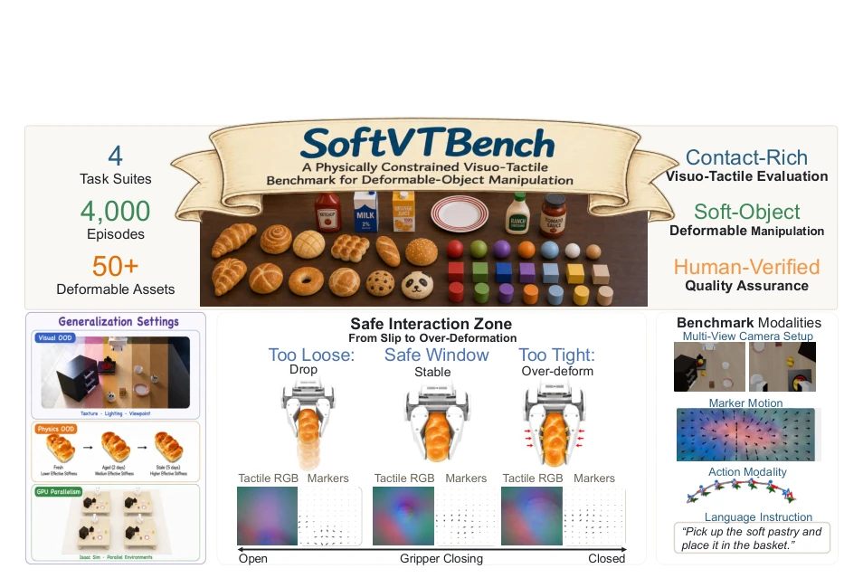
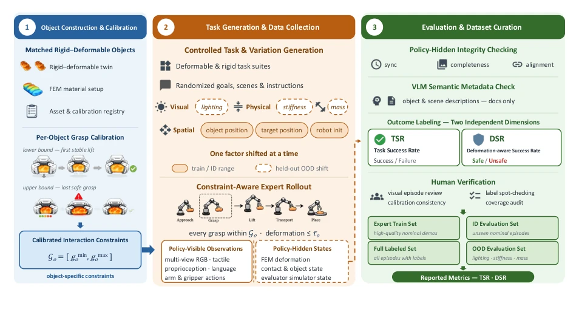
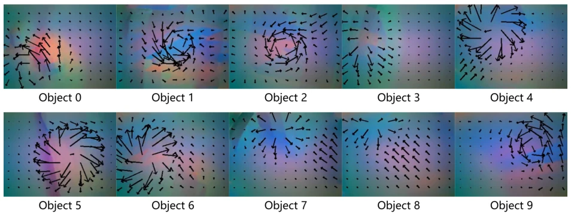
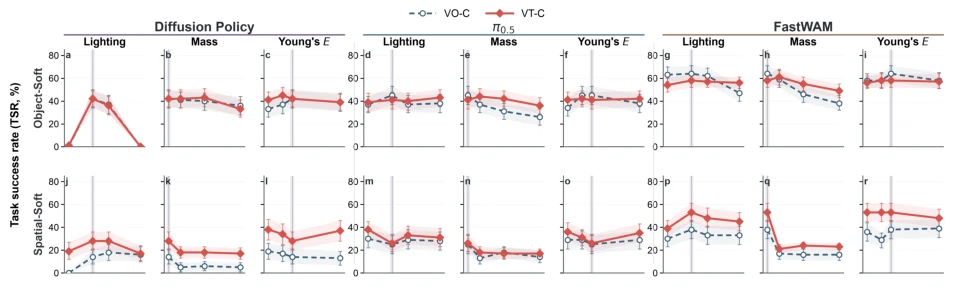
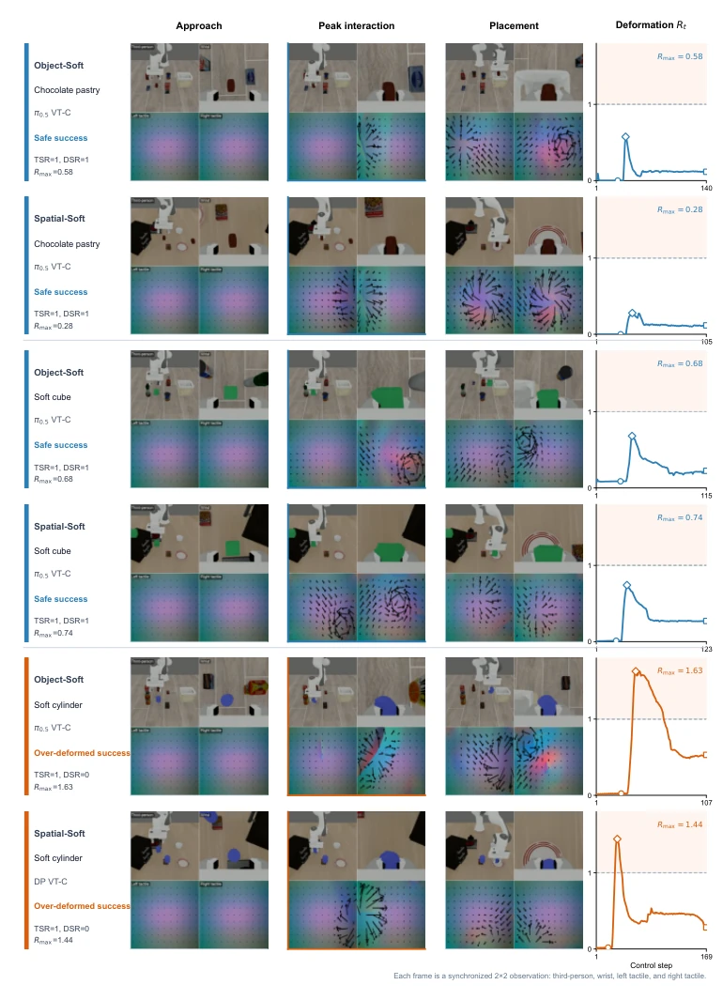

这篇论文给 Embodied AI 的“成功学”泼了盆冷水。现有基准只问“做没做完”，不问“弄坏没”。SoftVTBench 引入了 DSR 指标，强制策略既要完成任务又要控制形变。4000 次演示、50+ 资产，还有 FEM 真值，数据量够大。但别指望触觉就是万能药，实验证明触觉融合并不自动有效，只是分布外鲁棒性更好。这数据集是物理交互评估的“照妖镜”，可惜目前只支持仿真，真机迁移还得看后续。它揭示了完成度与物理安全性的巨大鸿沟，提醒研究者别被 TSR 骗了。
This paper pours cold water on the "successology" of Embodied AI. Existing benchmarks only ask "whether it is done", not "whether it is broken". SoftVTBench introduces the DSR metric, forcing policies to both complete tasks and control deformation. With 4000 demonstrations, 50+ assets, and FEM ground truth, the data volume is substantial. However, do not expect tactile sensing to be a panacea; experiments demonstrate that tactile fusion is not automatically effective, merely offering better out-of-distribution robustness. This dataset serves as a "truth-revealing mirror" for physical interaction evaluation; unfortunately, it currently only supports simulation, and real-robot transfer depends on follow-up work. It reveals a significant gap between completion and physical safety, reminding researchers not to be misled by TSR.
研究动机Motivation
现有基准如 LIBERO (Liu et al., 2023) 和 ManiSkill2 (Gu et al., 2023) 多关注刚性物体或任务完成度。软体操作基准如 SoftGym (Lin et al., 2020) 常把形变当目标而非约束。这导致策略可能通过过度压缩完成任务，却损坏物体。缺乏同时记录策略可见触觉和评估者可见物理真值的数据集，无法区分“成功”与“物理交互质量”。现有 Visuo-Tactile 基准如 VTDexManip (Liu et al., 2025) 也未提供评估者隐藏的形变真值，导致无法审计物理后果。我们需要一个能同时记录接触感知和物理后果的记录。
Existing benchmarks such as LIBERO (Liu et al., 2023) and ManiSkill2 (Gu et al., 2023) primarily focus on rigid objects or task completion. Soft manipulation benchmarks like SoftGym (Lin et al., 2020) often treat deformation as a target rather than a constraint. This causes policies to potentially complete tasks via over-compression while damaging objects. The lack of datasets recording both policy-visible tactile and evaluator-visible physical ground truth prevents distinguishing "success" from "physical interaction quality". Existing Visuo-Tactile benchmarks like VTDexManip (Liu et al., 2025) also fail to provide evaluator-hidden deformation ground truth, resulting in an inability to audit physical consequences. We require a record capable of simultaneously capturing contact perception and physical consequences.

Figure 1 Overview of SoftVTBench. Top: 4,000 demonstrations over four diagnostic suites and more than 50 assets, including volumetric deformable objects and visually matched rigid twins. Bottom left: controlled visual and physical shifts for closed-loop generalization evaluation. Bottom center: the physical-interaction regimes captured by touch and evaluated from object deformation, from slip-prone loose grasps to excessive compression. Bottom right: synchronized visual, tactile, proprioceptive, language, and action streams.
方法Method
整体流程分三步：资产构建、数据采集、评估校准。首先构建视觉匹配的刚性/软体孪生物体。其次，采集 4000 次专家演示，同步多视角 RGB、双指触觉 RGB、Marker 运动及本体感知，20Hz 频率。关键创新是“策略可见”与“评估者隐藏”流分离：策略只看到触觉，评估者用 FEM 状态计算形变。每物体校准形变容差，定义 DSR 指标。通过 FEM 节点位移计算形变，确保评估独立于策略。通过脚本物理探测固定容差，避免策略影响评估标准。数据集包含 40 个任务，4 个诊断套件，覆盖 Object-Soft 和 Spatial-Soft 等场景。评估协议包含分布内和分布外测试，通过单因子扰动光照、质量、刚度来验证泛化能力。
The overall workflow is divided into three steps: asset construction, data collection, and evaluation calibration. First, visually matched rigid/soft twin objects are constructed. Second, 4000 expert demonstrations are collected, synchronizing multi-view RGB, dual-finger tactile RGB, Marker motion, and proprioception at a 20Hz frequency. The key innovation is the separation of "policy-visible" and "evaluator-hidden" streams: the policy only observes tactile data, while the evaluator uses FEM states to calculate deformation. Deformation tolerance is calibrated per object, defining the DSR metric. Deformation is calculated via FEM node displacement, ensuring evaluation independence from the policy. Fixed tolerance is established through script-based physical probing to prevent policy influence on evaluation standards. The dataset comprises 40 tasks and 4 diagnostic suites, covering scenarios such as Object-Soft and Spatial-Soft. The evaluation protocol encompasses in-distribution and out-of-distribution tests, verifying generalization capabilities through single-factor perturbations of lighting, mass, and stiffness.

Figure 2 SoftVTBench construction and evaluation pipeline. Stage 1 constructs matched rigid–deformable objects and calibrates object-specific interaction constraints. Stage 2 generates controlled tasks and records policy- visible observations separately from evaluator-only physical states. Stage 3 applies automatic quality control and human verification, producing the released training, ID, and OOD splits. Task success and deformation compliance are labeled separately; DSR combines them during benchmark evaluation.

Figure 3 Tactile observations across deformable assets. Each panel shows a tactile RGB image with its marker- motion overlay at the moment of grasping, for the ten Object-Soft tasks. Objects that differ in geometry, compliance, and contact area produce distinct contact patches and shear fields under the same pick-and-place instruction. These are the cues available to a visuo-tactile policy and absent from external RGB views.
实验Experiments
测试 Diffusion Policy, π0.5, FastWAM。发现 TSR 常掩盖形变违规，DSR 更低。触觉在分布外（OOD）下提升鲁棒性，但在分布内（ID）收益混合。控制粒度（连续 vs 二值）会混淆触觉增益。证明单纯增加触觉不保证融合，需匹配控制空间。FastWAM 表现最稳，TSR 与 DSR 差距最小。实验表明，完成轴和交互轴的改进不一定对齐，这是单一成功指标无法记录的。
Tested Diffusion Policy, π0.5, and FastWAM. It was found that TSR often masks deformation violations, while DSR is lower. Tactile sensing improves robustness under out-of-distribution (OOD) conditions, but yields mixed results under in-distribution (ID). Control granularity (continuous vs. binary) confounds tactile gains. This proves that simply adding tactile sensing does not guarantee fusion; it requires matching the control space. FastWAM demonstrated the most stable performance, with the smallest gap between TSR and DSR. Experiments indicate that improvements along the completion axis and the interaction axis are not necessarily aligned, a nuance that a single success metric cannot capture.

Figure 4 Task Success Rate under out-of-distribution shifts, resolved by factor. Rows correspond to the Object-Soft and Spatial-Soft suites; column groups correspond to Diffusion Policy, π0.5, and FastWAM, each resolved into illumination, object-mass, and Young’s-modulus shifts.

Figure 5 Illustrative rollouts on three deformable objects across Object-Soft and Spatial-Soft. Each row shows synchronized third-person, wrist, and tactile observations at approach, peak interaction, and placement, followed by the normalized deformation trace Rt. Circle, diamond, and square indicate the displayed steps. All rollouts achieve task success (TSR= 1). Blue trajectories satisfy the calibrated deformation tolerance (DSR= 1), while orange trajectories exceed Rt = 1 despite success (DSR= 0). Rows are independently sampled and not matched-initial-state comparisons.